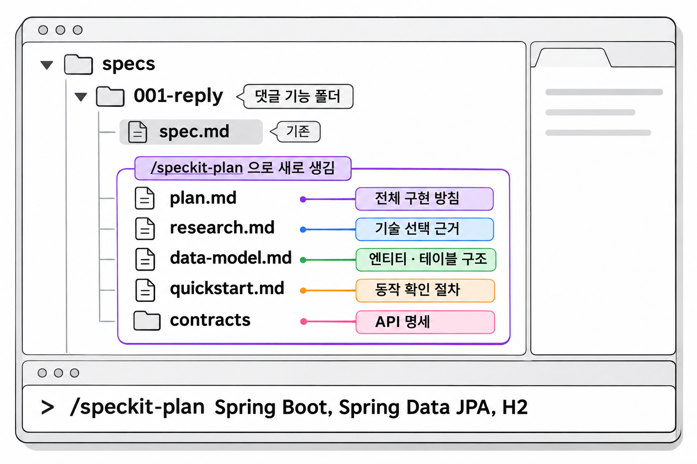
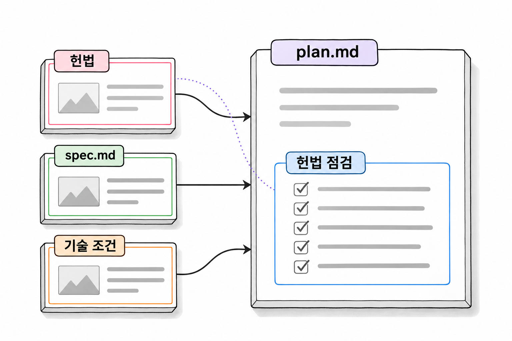

8장. 계획과 작업 목록이란?
1. plan — 어떤 기술과 구조로 만들까
1.1 /speckit-plan에서 기술 말하기
계획(plan)은 스펙에 적은 요구를 어떤 기술과 구조로 만들지 정한 문서입니다. 3장의 구분대로 스펙은 "무엇을, 왜"에 답하고 계획은 "어떤 기술과 구조로"에 답합니다. 7장에서는 스펙에 기술을 적지 않았습니다. 기술은 이 단계에서 처음 말합니다.
/speckit-plan 뒤에 쓰는 문장은 에이전트가 계획을 세울 때 지킬 기술 조건입니다. 에이전트는 이 문장과 함께 헌법과 spec.md를 읽고 계획을 씁니다. 기술 조건을 적지 않으면 계획 단계에서도 2장의 추측이 그대로 일어납니다. 에이전트가 흔히 쓰이는 라이브러리나 구조를 임의로 골라 넣습니다.
기존 프로젝트에 기능을 넣을 때는 다음 세 가지를 말해 두면 계획이 덜 빗나갑니다.
| 말할 것 | 댓글 기능에서 |
|---|---|
| 그대로 쓰는 기술 | Spring Boot, Spring Data JPA, H2 |
| 재사용할 기존 코드 | 이미 있는 Reply 엔티티와 reply_tb |
| 지켜야 할 형식 | REST API, 주소는 /api로 시작, 새 라이브러리 없음 |
예제 8-1 — 댓글 기능 계획 만들기
파일명: 없음(Claude Code 대화창에 입력)
7장에서 clarify까지 마친 상태에서, Claude Code 대화창에 다음을 입력합니다.
/speckit-plan Spring Boot, Spring Data JPA, H2 를 그대로 쓴다.
이미 있는 Reply 엔티티와 reply_tb 를 쓰고 새 엔티티를 만들지 않는다.
REST API 로 만들고 주소는 /api 로 시작한다. 새 라이브러리는 들이지 않는다.실행 결과
에이전트가 기능 폴더 안에 설계 문서를 만듭니다. 에이전트는 파일을 만들기 전에 1장 3절에서 본 파일 수정 승인을 요청합니다. 이때 쓰려는 파일이 specs/ 아래 기능 폴더에 있는지 확인하고 승인합니다. 만들어진 plan.md의 일부는 다음과 같습니다. 실제 파일은 이보다 깁니다.
## 기술 맥락
Spring Boot 4.1.2, Java 21, Spring Data JPA, H2. 신규 의존성 없음.
## 구조
- Reply 엔티티(reply_tb)는 이미 있으므로 그대로 쓴다. 엔티티는 수정하지 않는다.
- BoardRepository 가 없으므로 추가한다. 글이 있는지 확인하는 데 쓴다.
- ReplyRepository 를 추가한다. 글 번호로 댓글 목록을 조회한다.
- ReplyRequest.SaveDTO, ReplyResponse.DTO 를 record 로 추가한다. (헌법 3조)
- ReplyService 가 댓글쓰기, 댓글목록, 댓글삭제와 권한 검사를 담당한다.
- ReplyController 는 ReplyService 만 호출한다. (헌법 1조)
## API
| 메서드 | 주소 | 권한 |
|---|---|---|
| GET | /api/boards/{boardId}/replies | 누구나 |
| POST | /api/boards/{boardId}/replies | 로그인 |
| DELETE | /api/replies/{replyId} | 로그인. 댓글 작성자 또는 글 작성자 |
SecurityConfig 는 수정하지 않는다. 기존 규칙만으로 위 권한이 성립한다.
- GET /api/boards/** 는 permitAll
- 그 밖의 /api/** 는 USER 또는 ADMIN 권한 필요입력은 세 문장이었지만 계획에는 클래스 이름, 계층별 역할, API 주소와 권한까지 나왔습니다. 스펙의 "로그인한 사용자만 댓글을 쓸 수 있다"는 이 단계에서 "POST, 로그인"이라는 주소와 권한 규칙이 됩니다. 기술 조건으로 말한 "Reply 엔티티를 쓴다"도 구조 첫 줄에 반영되었습니다.
1.2 생성되는 설계 문서들
/speckit-plan은 plan.md 하나만 만들지 않습니다. 같은 기능 폴더에 설계 문서 여러 개가 함께 생깁니다.
| 파일 | 담는 내용 | 댓글 기능에서 볼 곳 |
|---|---|---|
plan.md | 전체 구현 방침. 어느 계층에 무엇을 더하는지 | 추가할 클래스와 API 표 |
research.md | 기술을 고른 근거와 검토한 대안 | 새 엔티티 대신 Reply를 쓰는 이유 |
data-model.md | 엔티티와 테이블 구조 | Reply와 reply_tb의 필드 |
contracts/ | API 명세. 요청과 응답의 형태 | 댓글쓰기 요청 본문과 응답 형태 |
quickstart.md | 완성한 뒤 동작을 확인하는 절차 | 댓글을 쓰고 지워 보는 순서 |
문서마다 검토할 점이 다릅니다. data-model.md는 기존 테이블과 맞는지 보고, contracts/는 응답이 기존 Resp 형태를 따르는지 봅니다. 문서를 이렇게 나눠 두면 9장에서 에이전트가 코드를 쓸 때 필요한 문서만 골라 읽습니다.
어떤 파일이 생기는지는 기능의 성격에 따라 달라질 수 있습니다. 예를 들어 API가 없는 기능이면 contracts/가 생기지 않을 수 있습니다. v1.3.3에서 만들어지는 정확한 파일 목록은 [확인 필요]입니다. 실행한 뒤 기능 폴더를 직접 열어 확인합니다.

생성형 예시 · 실제 실행 안 함
1.3 plan.md의 헌법 점검
plan.md에는 계획이 헌법의 조항을 지키는지 조항별로 따져 보는 부분이 있습니다. 6장에서 쓴 헌법이 실제로 쓰이는 곳이 바로 여기입니다. 예제 8-1의 plan.md 끝부분은 다음과 같습니다.
코드 조각
## 헌법 점검
- 1조 계층 구조: 준수
- 2조 응답과 예외: 글이나 댓글이 없으면 NotFoundException, 권한이 없으면 ForbiddenException
- 3조 요청과 응답 객체: 준수
- 4조 테스트: ReplyApiTest 추가
- 5조 금지: 신규 의존성 없음, 신규 엔티티 없음, SecurityConfig 변경 없음6장에서 조항을 판별할 수 있는 문장으로 쓴 이유가 여기서 드러납니다. "코드를 깨끗하게 작성한다" 같은 조항이었다면 에이전트는 "준수"라고만 적었을 것이고, 사람도 그 말이 맞는지 따질 수 없었을 것입니다. "SecurityConfig의 URL 접근 규칙을 바꾸지 않는다"는 계획의 구조 목록에 SecurityConfig가 있는지만 보면 판별됩니다.

그림 8-1처럼 계획은 세 가지를 읽고 쓰입니다. 다만 헌법 점검에 "준수"라고 적혀 있어도 그 표시는 에이전트의 판단일 뿐입니다. 6장에서 본 것처럼 헌법은 강제 장치가 아닙니다. "준수"라는 표시만 믿지 말고, 계획 본문이 실제로 조항을 지키는지 2절의 순서대로 확인합니다.
2. plan 검토하기
전체 흐름에서 개발자의 판단이 가장 많이 필요한 곳이 이 단계입니다. 스펙은 기획자도 검토할 수 있지만, 계획이 기존 코드와 맞는지는 프로젝트를 아는 개발자만 판단할 수 있습니다. 예제 8-1의 계획은 잘 나온 경우입니다. 같은 입력에서도 잘못된 계획이 나올 수 있습니다. 이 절에서는 그런 계획 네 가지와, 각각을 어디서 잡아내는지 봅니다.
| 확인할 것 | 볼 곳 | 근거로 삼을 것 |
|---|---|---|
| 기존 코드를 재사용하는가 | data-model.md, plan.md의 구조 | 프로젝트의 엔티티와 테이블 |
| 빠진 전제가 없는가 | plan.md의 구조 | 프로젝트에 실제로 있는 클래스 |
| 헌법이 금지한 것을 들이지 않았는가 | plan.md의 기술 맥락, research.md | 헌법 5조, build.gradle |
| 주소가 SecurityConfig 규칙과 맞는가 | plan.md의 API 표, contracts/ | SecurityConfig의 접근 규칙 |
2.1 기존 코드를 재사용하는가
에이전트는 기존 코드를 찾아 쓰기보다 새로 만드는 쪽을 고르는 경향이 있습니다. 댓글 기능에서는 "댓글"이라는 말을 보고 Comment 엔티티를 새로 만드는 계획이 나오기 쉽습니다.
코드 조각
## 구조
- Comment 엔티티와 comment_tb 테이블을 추가한다.
- CommentRepository 를 추가한다.이 계획대로 만들면 같은 역할의 테이블이 reply_tb와 comment_tb 두 개가 됩니다. 기존 Reply 엔티티는 아무도 쓰지 않는 코드로 남습니다. 헌법 5조의 "이미 있는 엔티티와 같은 역할의 클래스를 새로 만들지 않는다"를 어긴 계획이기도 합니다.
data-model.md에 새 엔티티가 보이면 6장에서 본 패키지 구조와 견주어 봅니다. reply 패키지에 Reply 엔티티가 이미 있으므로 다음처럼 바로잡습니다.
코드 조각
## 구조
- Reply 엔티티(reply_tb)는 이미 있으므로 그대로 쓴다. 엔티티는 수정하지 않는다.
- ReplyRepository 를 추가한다. 글 번호로 댓글 목록을 조회한다.plan.md는 직접 고쳐도 되고 대화창에서 에이전트에게 고치라고 해도 됩니다. 에이전트에게 맡길 때는 고칠 파일과 근거를 함께 말합니다.
코드 조각
plan.md 와 data-model.md 에서 Comment 엔티티를 빼고 기존 Reply 엔티티와 reply_tb 를 쓰도록 고쳐 줘.
Reply 는 src/main/java/com/newtenco/blog/reply/Reply.java 에 이미 있어.2.2 빠진 전제가 없는가
계획이 "있다고 가정한" 클래스가 실제로는 없는 경우가 있습니다. 댓글을 저장하기 전에는 대상 게시글이 있는지 확인해야 하므로, 계획에 다음 문장이 나올 수 있습니다.
코드 조각
- ReplyService 는 BoardRepository 로 글이 있는지 확인한 뒤 댓글을 저장한다.문장 자체는 자연스럽습니다. 하지만 6장에서 확인했듯이 이 프로젝트의 board 패키지에는 Board 엔티티만 있고 BoardRepository는 아직 없습니다. 계획이 BoardRepository를 쓴다고만 하고 만든다는 말이 없으면, 작업 목록에도 BoardRepository를 만드는 작업이 빠집니다. 그러면 구현 단계에서 컴파일 오류가 나거나, 에이전트가 그 자리에서 즉흥적으로 클래스를 만듭니다.
계획에 나온 클래스 이름은 하나씩 프로젝트에 있는지 확인합니다. 없는 클래스를 쓰는 계획이라면 그 클래스를 추가하는 작업을 구조에 넣습니다.
코드 조각
- BoardRepository 가 없으므로 추가한다. 글이 있는지 확인하는 데 쓴다.예제 8-1의 계획은 이 문장을 이미 담고 있습니다. 확인할 때는 "쓴다"와 "추가한다"를 구분해서 읽습니다.
2.3 헌법이 금지한 것을 들이지 않았는가
에이전트는 업계에서 흔히 쓰는 라이브러리를 편의상 들이려 합니다. 엔티티와 record 사이의 변환이 필요하다는 이유로 다음 계획이 나올 수 있습니다.
코드 조각
## 기술 맥락
Spring Boot 4.1.2, Java 21, Spring Data JPA, H2, MapStruct.
- 엔티티와 DTO 변환에 MapStruct 를 쓴다. build.gradle 에 의존성을 추가한다.헌법 5조는 build.gradle에 의존성을 추가하지 못하게 합니다. 이 계획은 헌법 점검에 "5조 준수"라고 적혀 있더라도 본문에서 이미 조항을 어겼습니다. 1.3에서 "준수"라는 표시만 믿지 말라고 한 이유입니다.
새 라이브러리 이름이 기술 맥락이나 research.md에 보이면 지우고, 기존 방식으로 같은 일을 하게 고칩니다. 이 프로젝트는 요청과 응답을 record로 다루므로 변환도 record 안에서 합니다.
코드 조각
## 기술 맥락
Spring Boot 4.1.2, Java 21, Spring Data JPA, H2. 신규 의존성 없음.
- 엔티티를 응답으로 바꿀 때는 ReplyResponse.DTO 의 생성자를 쓴다.
- 요청을 엔티티로 바꿀 때는 ReplyRequest.SaveDTO 의 toEntity 메서드를 쓴다.2.4 주소가 SecurityConfig 규칙과 맞는가
이 프로젝트에서는 주소가 곧 권한입니다. SecurityConfig가 주소 모양을 보고 누가 접근할 수 있는지 정하기 때문입니다. 예제 프로젝트의 SecurityConfig 규칙은 위에서부터 차례로 적용됩니다.
| 순서 | 주소 | 접근 |
|---|---|---|
| 1 | GET /api/boards/** | 누구나 |
| 2 | 그 밖의 /api/** | USER 또는 ADMIN 권한 |
| 3 | 위에 해당하지 않는 모든 요청 | 차단 |
예제 8-1의 API 표를 이 규칙에 하나씩 대어 봅니다. GET /api/boards/{boardId}/replies는 1번 규칙에 걸리므로 누구나 목록을 봅니다. 같은 주소라도 POST는 1번 규칙에서 벗어나 2번 규칙에 걸리므로 로그인한 사용자만 댓글을 씁니다. DELETE /api/replies/{replyId}도 2번 규칙에 걸립니다. SecurityConfig를 고치지 않고도 스펙의 권한 요구가 모두 성립합니다.
에이전트가 주소를 다르게 정하면 사정이 달라집니다.
코드 조각
## API
| 메서드 | 주소 | 권한 |
|---|---|---|
| GET | /replies?boardId={boardId} | 누구나 |
| POST | /replies | 로그인 |/replies는 /api로 시작하지 않아서 3번 규칙에 걸립니다. 로그인했든 하지 않았든 모든 요청이 차단됩니다. 2장에서 본 한 줄 지시의 다섯 번째 문제가 계획 단계에서 다시 나타난 것입니다. 주소를 /api/replies?boardId=...로 고쳐도 아직 부족합니다. 이 GET 요청은 2번 규칙에 걸리므로 로그인해야 목록을 볼 수 있게 되고, "댓글 목록은 누구나 볼 수 있다"는 스펙과 어긋납니다.
이런 계획을 받은 에이전트는 SecurityConfig에 규칙을 하나 더하자고 제안하기도 합니다. 헌법 5조가 SecurityConfig의 접근 규칙 변경을 금지하므로 그 제안은 받지 않습니다. 대신 주소를 기존 규칙에 맞게 고칩니다. 목록 조회는 /api/boards/로 시작하는 GET 주소로 둡니다.
계획을 이 단계에서 바로잡으면 문서 몇 줄만 고치면 됩니다. 구현이 끝난 뒤에 발견하면 컨트롤러와 테스트를 다시 만들어야 합니다. 3장에서 본 고치는 비용의 차이가 실제로 드러나는 곳이 여기입니다.
3. tasks — 작업 순서 정하기
3.1 /speckit-tasks와 tasks.md
작업 목록(tasks)은 계획을 구현할 순서대로 쪼갠 작업 단위의 목록입니다. 3장의 구분에서 "어떤 순서로"에 답하는 층입니다. /speckit-tasks는 spec.md와 plan.md 같은 설계 문서를 읽고 기능 폴더에 tasks.md를 만듭니다. 기술과 구조는 계획에서 모두 정했으므로 명령 뒤에 덧붙일 말은 없습니다.
예제 8-2 — 댓글 기능 작업 목록 만들기
파일명: 없음(Claude Code 대화창에 입력)
2절의 검토를 마친 상태에서, 대화창에 다음을 입력합니다.
/speckit-tasks실행 결과
기능 폴더에 tasks.md가 생깁니다. 다음은 이해를 돕기 위해 줄인 모습입니다.
## 1단계: 데이터
- [ ] T001 BoardRepository 추가
- [ ] T002 ReplyRepository 추가 (글 번호로 댓글 목록 조회)
## 2단계: 서비스
- [ ] T003 ReplyRequest.SaveDTO, ReplyResponse.DTO 추가
- [ ] T004 ReplyService 에 댓글쓰기, 댓글목록, 댓글삭제와 권한 검사 구현
## 3단계: API
- [ ] T005 ReplyController 추가
- [ ] T006 ReplyApiTest 작성 (목록 조회, 쓰기 성공, 비로그인 쓰기 거부, 남의 댓글 삭제 거부)
- [ ] T007 전체 테스트 실행. 기존 테스트 16개 포함 모두 통과 확인작업마다 T001 같은 번호와 - [ ] 체크 칸이 붙습니다. 번호는 리뷰나 대화에서 "T004만 다시 보자"처럼 작업을 가리킬 때 씁니다. 체크 칸은 9장의 구현 단계에서 작업이 끝날 때마다 채워집니다.
2.2에서 확인한 BoardRepository 추가가 T001로 들어왔습니다. 계획에 적은 것만 작업이 된다는 뜻입니다. 계획에서 빠진 전제는 작업 목록에서도 빠지므로, 계획을 고친 뒤에 tasks를 실행해야 합니다.
실제로 생성되는 tasks.md는 이보다 길고 묶는 방식도 다릅니다. 준비(Setup), 모든 시나리오가 함께 쓰는 기반(Foundational), 사용자 시나리오별 단계, 마무리(Polish) 순으로 단계를 나눕니다. 함께 진행할 수 있는 작업에는 병렬 표시가 붙습니다. 위 예시는 계층 순서가 눈에 보이도록 단계 이름을 바꿔 줄인 것입니다.
3.2 작업 분량과 순서 검토하기
tasks.md는 세 가지를 보며 검토합니다.
첫째, 순서가 의존 관계를 따르는지 봅니다. ReplyService는 ReplyRepository와 BoardRepository를 쓰므로 리포지토리 작업이 서비스 작업보다 앞에 있어야 합니다. 컨트롤러는 서비스를 호출하므로 서비스 다음에 옵니다. 순서가 뒤집혀 있으면 구현하는 도중에 아직 없는 클래스를 부르게 됩니다.
둘째, 계획에 없거나 헌법이 막는 작업을 지웁니다. 다음과 같은 작업이 섞여 있으면 지웁니다.
| 지울 작업의 예 | 지우는 이유 |
|---|---|
| Reply 엔티티 생성 | 이미 있다. 계획에도 "엔티티는 수정하지 않는다"고 적었다 |
| SecurityConfig에 댓글 주소 규칙 추가 | 헌법 5조가 금지한다. 2.4에서 기존 규칙으로 충분함을 확인했다 |
| 댓글 수정 API 추가 | 스펙의 범위 밖이다 |
| 공통 응답 클래스 추가 | Resp가 이미 있다 |
셋째, 테스트와 확인 작업이 있는지 봅니다. 헌법 4조는 새 API마다 성공과 실패 테스트를 요구하고, 스펙의 성공 기준에는 "기존 테스트 16개가 모두 통과한다"가 있습니다. 예제 8-2에서는 T006과 T007이 이 두 가지를 맡습니다. 마지막 작업이 전체 테스트 실행이 아니면 추가합니다.
순서를 바꾸거나 작업을 지울 때는 tasks.md를 직접 고쳐도 됩니다. 작업 번호가 어긋나도 구현에는 문제가 없지만, 번호를 다시 매겨 두면 나중에 리뷰할 때 가리키기 쉽습니다.
3.3 작업이 너무 많으면 기능을 나눈다
마지막으로 작업의 수를 셉니다. 댓글 기능은 일곱 개로 끝났습니다. 작업이 수십 개를 넘어가면 tasks.md를 고칠 문제가 아닙니다. 기능 자체가 너무 큰 것입니다.
작업이 많으면 1장에서 본 컨텍스트 문제가 구현 단계에서 다시 생깁니다. 에이전트가 작업을 하나씩 진행하는 동안 읽은 파일과 실행 결과가 쌓입니다. 뒤쪽 작업에 이를 때쯤에는 앞에서 정한 내용이 압축되거나 밀려납니다. 작업 목록이 파일로 남아 있어도 한 번에 다루는 양이 지나치면 결과가 흔들립니다.
이럴 때는 tasks.md를 줄이지 말고 스펙으로 돌아가 기능을 나눕니다. 예를 들어 처음 요구가 "댓글 쓰기 · 삭제 · 수정과 답글"이었다면 다음처럼 나눌 수 있습니다.
| 기능 폴더 | 이번 스펙에 넣을 것 | 범위 밖으로 뺄 것 |
|---|---|---|
| 첫 번째 기능 | 댓글 목록 · 쓰기 · 삭제 | 댓글 수정, 답글 |
| 다음 기능 | 댓글 수정 | 답글 |
| 그다음 기능 | 답글 | 없음 |
7장에서 댓글 수정을 스펙의 범위 밖에 적은 것도 이런 판단입니다. 나눈 기능은 각자 specify부터 다시 시작하므로 기능 폴더도 따로 생깁니다.
4. analyze — 문서 사이의 불일치 찾기(선택)
4.1 /speckit-analyze 보고서 읽기
문서가 spec.md · plan.md · tasks.md 세 개로 늘면 서로 어긋날 수 있습니다. 스펙에는 있는데 작업 목록에 없는 요구는 구현되지 않거나, 구현되더라도 아무도 검증하지 않습니다. /speckit-analyze는 세 문서를 서로 대조해서 누락, 모순, 모호한 곳을 보고합니다. 선택 단계이지만 구현에 들어가기 전에 실행하는 편이 안전합니다.
7장에서 본 checklist가 요구사항 문장 하나하나를 점검했다면, analyze는 문서와 문서 사이를 봅니다. 그래서 tasks.md까지 만든 지금 실행합니다.
예제 8-3 — 세 문서의 불일치 찾기
파일명: 없음(Claude Code 대화창에 입력)
예제 8-2의 tasks.md를 만든 상태에서, 대화창에 다음을 입력합니다.
/speckit-analyze실행 결과
에이전트가 대화창에 보고서를 출력합니다. 보고서에서 눈여겨볼 부분은 다음과 같습니다.
- 스펙의 시나리오 4 (글 작성자의 댓글 삭제)를 검증하는 테스트가 T006 에 없음
- 확정된 사항 "댓글은 100자 이하"를 검증하는 테스트가 T006 에 없음analyze는 파일을 고치지 않고 읽기만 합니다. 실행하는 동안 파일 수정 승인 요청이 나오지 않는 것도 그 때문입니다. 보고서 끝에 고칠 방법을 제안하기도 하지만, 그 제안을 반영할지는 사람이 정합니다.
두 항목 모두 스펙에는 있고 작업 목록에는 없는 요구입니다. 시나리오 4는 7장에서 스펙에 넣었고, 100자 제한은 clarify에서 확정했습니다. T006의 테스트 목록에는 둘 다 빠져 있습니다. 이대로 구현하면 ReplyService에 글 작성자 권한 검사가 들어가더라도, 그 검사가 맞게 동작하는지 확인하는 테스트가 없습니다.
4.2 보고된 누락을 tasks.md에 반영하기
보고된 항목마다 어느 문서를 고칠지 정합니다. 기준은 "어느 문서가 옳은가"입니다. 이번 두 항목은 스펙이 옳고 작업 목록이 빠뜨린 경우이므로 tasks.md를 고칩니다. 반대로 계획이 스펙에 없는 기능을 넣은 경우라면 계획에서 그 내용을 지웁니다.
예제 8-4 — 누락된 테스트를 T006에 넣기
이어서: 예제 8-2
파일명: specs/001-reply/tasks.md(기능 폴더 이름은 실제 생성된 이름을 따릅니다)
## 1단계: 데이터
- [ ] T001 BoardRepository 추가
- [ ] T002 ReplyRepository 추가 (글 번호로 댓글 목록 조회)
## 2단계: 서비스
- [ ] T003 ReplyRequest.SaveDTO, ReplyResponse.DTO 추가
- [ ] T004 ReplyService 에 댓글쓰기, 댓글목록, 댓글삭제와 권한 검사 구현
## 3단계: API
- [ ] T005 ReplyController 추가
- [ ] T006 ReplyApiTest 작성 (목록 조회, 쓰기 성공, 비로그인 쓰기 거부, 100자 초과 거부,
남의 댓글 삭제 거부, 자기 댓글 삭제, 글 작성자의 댓글 삭제)
- [ ] T007 전체 테스트 실행. 기존 테스트 16개 포함 모두 통과 확인실행 결과
고친 파일을 저장한 뒤 대화창에 /speckit-analyze를 다시 입력하면, 앞에서 보고된 두 항목이 보고서에서 사라집니다.
이제 T006의 테스트 이름이 스펙의 시나리오, clarify에서 확정한 사항과 하나씩 짝을 이룹니다. "자기 댓글 삭제"는 보고서에 없었지만 시나리오 3의 성공 쪽이 빠져 있어서 함께 넣었습니다. 보고서가 짚은 항목만 고치지 말고, 같은 종류의 누락이 또 있는지 스펙을 옆에 두고 한 번 더 대조합니다. 에이전트의 보고서도 빠뜨리는 것이 있을 수 있기 때문입니다.
이렇게 세 문서가 맞춰지면 9장에서 /speckit-implement로 T001부터 구현을 시작합니다.